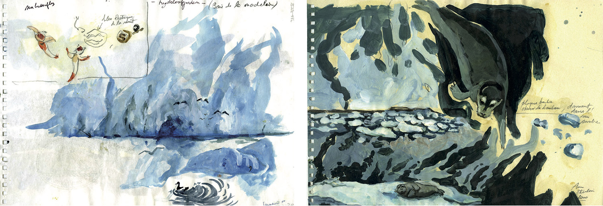

Article rédigé par Laurent Chauvaud
Les origines
Aujourd’hui, tout programme de recherche scientifique comprend un volet de communication non-seulement vers la communauté des chercheurs, mais aussi vers les partenaires industriels et le grand public. Pendant près de quarante ans, ce type de communication s’est enraciné dans un style et une philosophie empruntées à la communication publicitaire : identification d’une audience cible, manipulation de normes graphiques visant à attirer l’attention, simplification extrême du discours scientifique. Mais en parallèle, les chercheurs eux-mêmes, se sentant mal compris dans ce style de communication, ont développé un discours “éducatif”, prenant la position de l’enseignant convaincu que si l’audience ciblée pouvait avoir accès à la bonne information, il comprendra le sujet et surtout l’intérêt de soutenir un projet scientifique (c’est ce que recouvre le terme “outreach”).

Nouveaux paradigmes
Cependant, à la fin des années 1990s, une autre voix s’est élevée: celui des professionnels de l’enseignement qui travaillent dans les cours élémentaires et moyens, les collèges et les lycées. Les enseignants ont compris que les scientifiques n’ont pas de formation sur les techniques d’apprentissage et d’assimilation des nouvelles informations. Des groupes d’enseignants se sont impliqués pour remettre les bases de l’enseignement (expérience, dialogue, accessibilité, répétition, jeux) dans une médiation scientifique renouvelée. Quasi simultanément, le mouvement qui mélange Arts et Sciences (apparu à la fin des années 1990s dans les pays anglophones) s’est positionné sur la volonté de construire quelque chose de neuf (où d’innovant plus précisément). Ces mélanges sont décrit comme proposer une nouvelle voie de perception de la science, et de nouveaux “produits” issus du transfert des connaissances des découvertes scientifiques. Ceci est plutôt le “design thinking” qui circule dans les écoles d’ingénierie et de business.
Partage du processus de création entre communautés
Malgré tout, le foisonnement autour de ces “mix”, les historiens des sciences et arts ont pu rapidement pointé l’absence d’innovation et l’improductivité de ces premières approches. En fait, les relations entre arts et sciences, et surtout entre artistes et scientifiques ont toujours été très proches. Ils partagent en commun le processus de création et la qualité de la créativité, discutée aujourd’hui dans le cadre de l’innovation, la production et le design. Ceci reste fondamental pour les deux communautés qui mélangent souvent les fils de l’apprentissage, de la création, et de la curiosité à travers des études des milieux, des objets et des matières.